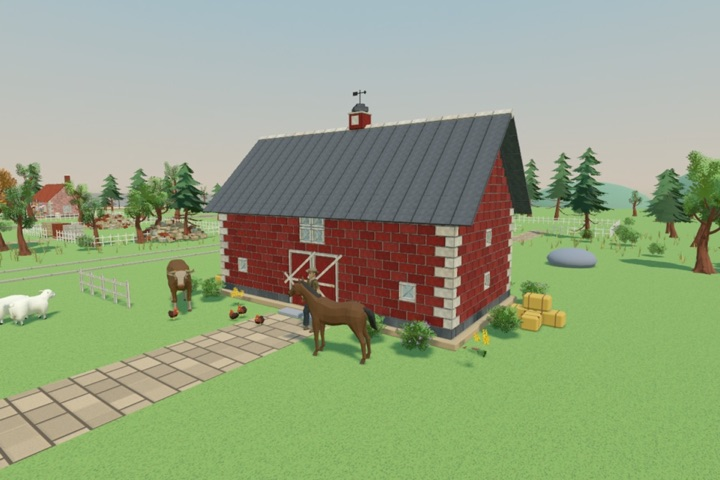
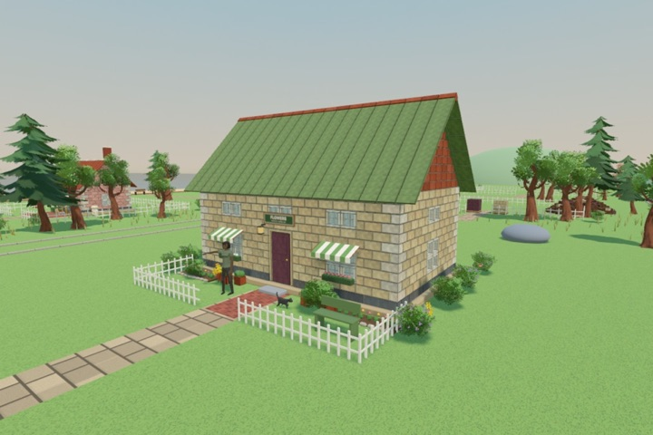
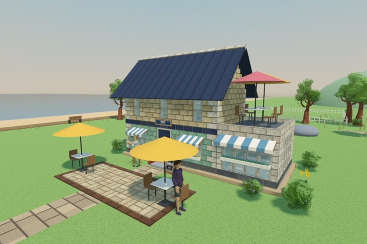
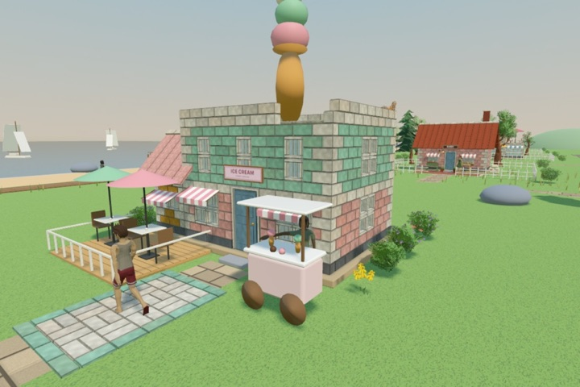
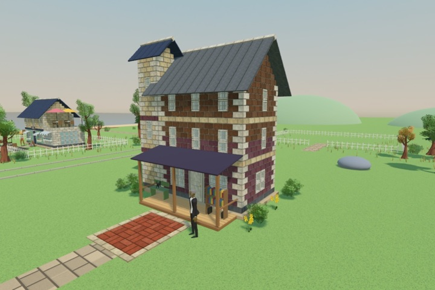
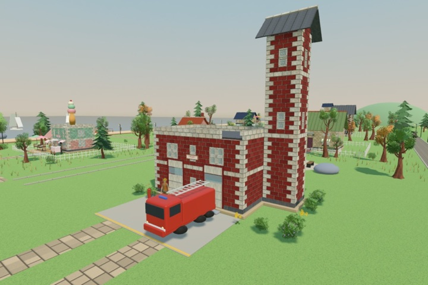
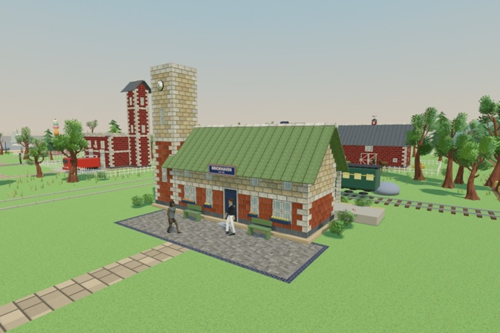

Brick by brick
Find the right shape and colour in the pile, carry up to twenty at a time, and lay every one yourself.
A story to finish
Each building brings its owner back: Martha's bakery, Joe's barn, Daisy's flowers, all the way to the station.
Your own design
At the Architect's Table you draw your own house, café or shop, then build it on your lot.
Decorate the town
Benches, lamps, flower beds, trees, cats and chickens: make the streets your own.
Skills that grow
Stronger arms, faster hands, a lift that climbs higher and a magnet that pulls bricks to you.
Calm by design
Play offline at your own pace. No timers, no energy, no ads. The first two buildings are free; the rest of the town is a one-time purchase.
Eight buildings, eight stories
Every building has its owner waiting.







Support
A bug, an idea or a question? Write to us at hyapps@outlook.com. We read every message.
Is Brickhaven free?
The first two buildings, the Bakery and the Red Barn, are free. The Whole Town is a one-time purchase that opens every other building, the Architect's Table and Decorate. There is no subscription and there are no ads.
Does it need an internet connection?
No. Brickhaven plays fully offline. Purchases, iCloud sync and Game Center use the internet when it is there.
Will my town move to my new phone or iPad?
Yes. Your saves are kept in your own iCloud, so signing in with the same Apple Account brings them along.
I bought it on another device. How do I get it back?
Open the purchase screen and tap Restore. Purchases are also shared with your Family Sharing group.
Is there a mode for colour blindness?
Yes: Settings → Colour-blind mode prints a small symbol on every brick colour, so shapes, not colours alone, tell them apart.